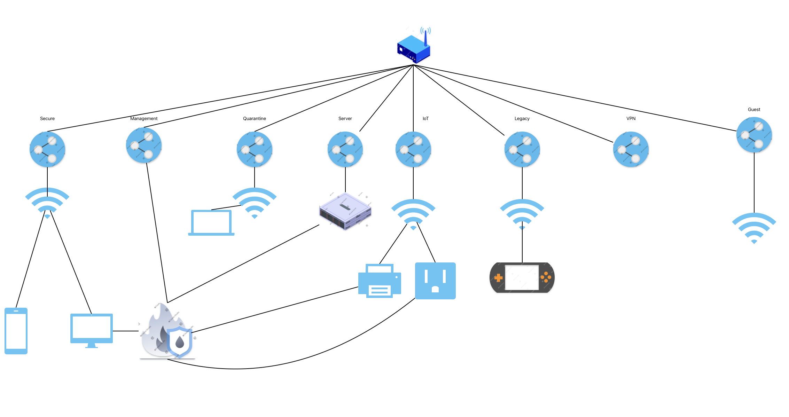
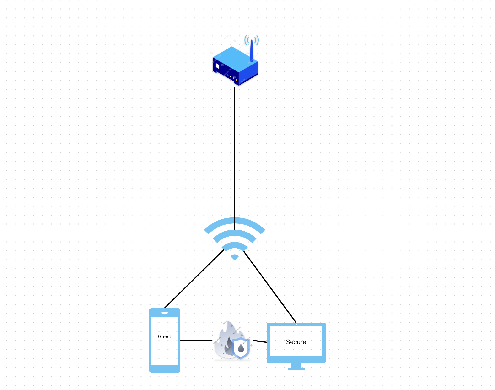
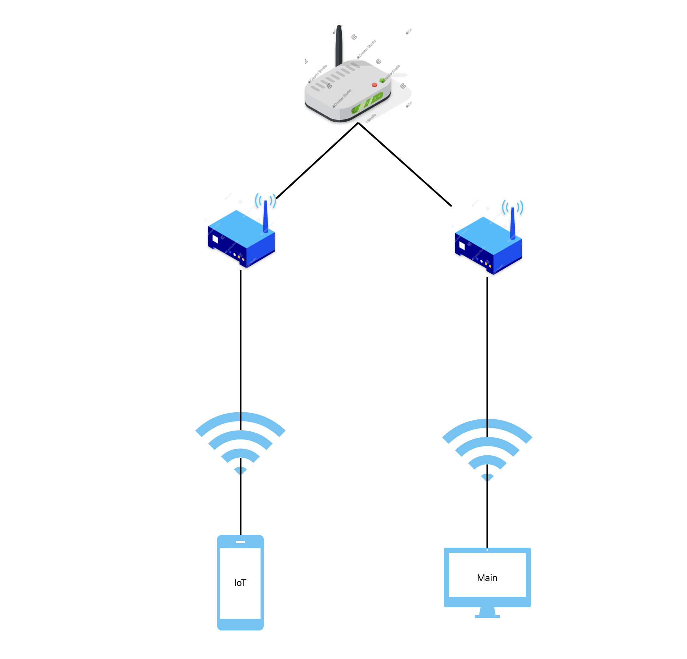
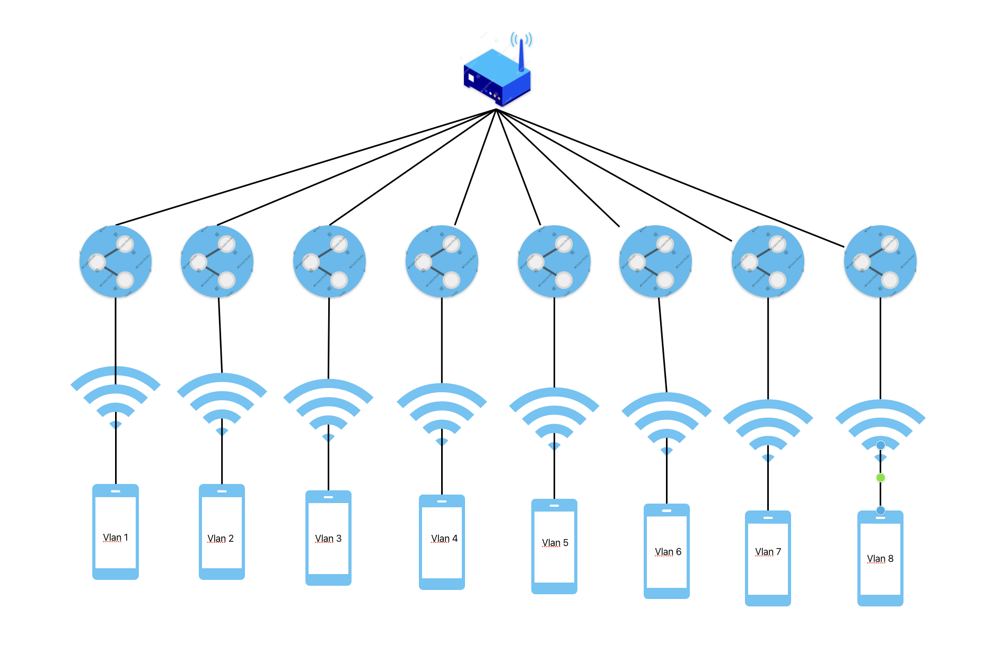

Modern home routers trade security for convenience — and most people have no idea how vulnerable their flat networks really are. This project explores why network segmentation matters, when VLANs aren't an option, and how I built an 8-VLAN UniFi setup that balances real security with daily usability.
Home routers are designed for speed and simplicity — a user can be online in minutes. But that ease of setup often comes at a serious cost to security. Beyond default passwords and unpatched firmware, the biggest overlooked problem is the lack of network segmentation. When every device lives on the same flat network, a single infected guest phone or sketchy smart plug can reach your work laptop, NAS, or anything else on the network.
Segmentation is the practice of separating devices into isolated groups so that a compromise in one zone cannot spread to others. VLANs (Virtual Local Area Networks) are the standard tool for this — they let a single physical router carry multiple logically separated networks simultaneously. Many consumer routers used to support VLANs, but they were complicated enough that most people ignored them. Today, with IoT devices in every room and remote work on every kitchen table, the stakes are too high to keep ignoring this.

The threat model is simple: every device you add to your network is a potential entry point. IoT devices like smart plugs, smart bulbs, and cameras are among the least secure pieces of tech on the market — they often run outdated firmware, rarely receive patches, and can't be hardened by the end user. Printers and smart TVs are in the same boat, typically losing vendor support after one to two years.
EERO routers are a particularly stark example of this problem. Manufactured by Amazon — a company whose own IoT lineup (Alexa, Ring cameras, smart plugs) has a poor security track record — EERO offers no native VLAN support. If you're running an all-Amazon setup, you have no built-in way to separate those IoT devices from the rest of your network.
If your router doesn't support VLANs, there are two practical alternatives — both with real trade-offs.
Option 1: Guest Network Isolation
Most modern routers include a guest network feature. It's important to understand what this actually does: the guest SSID is not a separate network in the VLAN sense. It's a separate Wi-Fi connection that still routes through the same IP subnet — but with stricter firewall rules applied by the router. Guest networks typically block device-to-device communication and restrict access to local resources. This makes them a useful place to dump IoT devices — they can reach the internet but can't poke around your LAN. It's the bare minimum solution, and it costs nothing extra.

Option 2: Separate Physical Routers
If one router means one network, the straightforward fix is more routers. My old setup used a Nighthawk mesh system for main traffic and EERO routers for IoT, legacy devices, and anything untrusted. For an infected device on one router to reach a device on the other, it would need to escape its own router, pass through the modem, and compromise the second router — all without triggering detection. The downsides are cost, space, and potential Wi-Fi interference. When possible, assign different frequency bands: 5 GHz / 6 GHz for the main router, 2.4 GHz for IoT (which is all most IoT devices support anyway).

For proper segmentation, you need a router that actually supports VLANs. UniFi's Dream and Express series are the best-known consumer options with enterprise-grade features. I used a UniFi router to build the following 8-VLAN architecture — sized to be comprehensive without becoming unmanageable.

| ID | Name | IP Range | Wi-Fi | Isolated | Purpose |
|---|---|---|---|---|---|
| 1 | Secure | 10.0.1.1/24 | WPA3 · 5/6 GHz | No | Primary trusted devices — laptops, phones, Mac |
| 2 | Management | 10.0.2.1/24 | No Wi-Fi | Yes | Router/switch admin access, limited device allowlist |
| 3 | Quarantine | 10.0.3.1/24 | WPA2/3 · All bands | Yes | Unknown or untrusted devices pending review |
| 4 | Server | 10.0.4.1/24 | No Wi-Fi | Yes | Pi cluster — wired only, selective port allowlist |
| 5 | IoT | 10.0.5.1/24 | WPA2 · 2.4 GHz only | Yes | Smart plugs, bulbs, printer — internet but no LAN |
| 6 | Legacy | 10.0.6.1/24 | WPA2/3 · 2.4/5 GHz | Yes | Old consoles, 3DS, devices without recent updates |
| 7 | VPN | 10.0.7.1/24 | No Wi-Fi | Yes | Remote access tunnel — configured in next project |
| 8 | Guest | 10.0.8.1/24 | WPA2/3 · All bands | Yes | Visitors — internet only, DNS via 9.9.9.9 / 1.1.1.1 / 8.8.8.8 |
10.0.[VLAN_ID].1/24, giving up to 255 devices per segment — more than enough for any home network, and easy to read at a glance.
By default, UniFi VLANs are not isolated — inter-VLAN routing is on. Every network above (except Secure) was explicitly isolated using UniFi's firewall zone system. The interesting case is IoT: the printer lives on the IoT VLAN for security reasons, but my work computers on the Secure VLAN need to print. The solution is a targeted firewall rule that allows the printer's IP to communicate on specific ports only, with everything else dropped.
# Printer port allowlist (adjust based on your printer and OS)
TCP 631 — IPP (Internet Printing Protocol)
TCP 515 — LPD/LPR legacy printing
TCP 445 — SMB (Windows file sharing / scan-to-folder)
TCP 137-139 — NetBIOS (legacy Windows discovery)
TCP 9100 — RAW / JetDirect printingThe remaining VLANs follow simpler rules:
The biggest lesson from this project is that network security at home isn't just about having a good password — it's about limiting blast radius. A compromised IoT device on a flat network can see everything. The same device on an isolated VLAN can reach the internet and nothing else. That difference is enormous.
UniFi makes this achievable at home without a networking degree, but it still requires deliberate planning: knowing which devices belong where, which ports actually need to be open, and which inter-VLAN communications are genuinely necessary versus just convenient. The firewall zone model makes those decisions explicit rather than hidden behind default behavior.
The next project will wire up the VPN VLAN for secure remote access, and a future project will explore using Home Assistant as an additional control layer for IoT traffic. Device naming is also worth doing as soon as the network is up — being able to see "Kieran's MacBook" instead of a MAC address makes detecting rogue devices significantly faster.